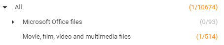

How to Select
Select per file type (in the right pane) or per category (left pane).
In the left pane, view the number of selected file types (for each category).
In the image below, you can see that 1 of the 514 file types in the category Movie, film video and multimedia files is selected.

Filter. Select All. Clear All.
Note: When filtered first, only those file types will be cleared with Clear All.